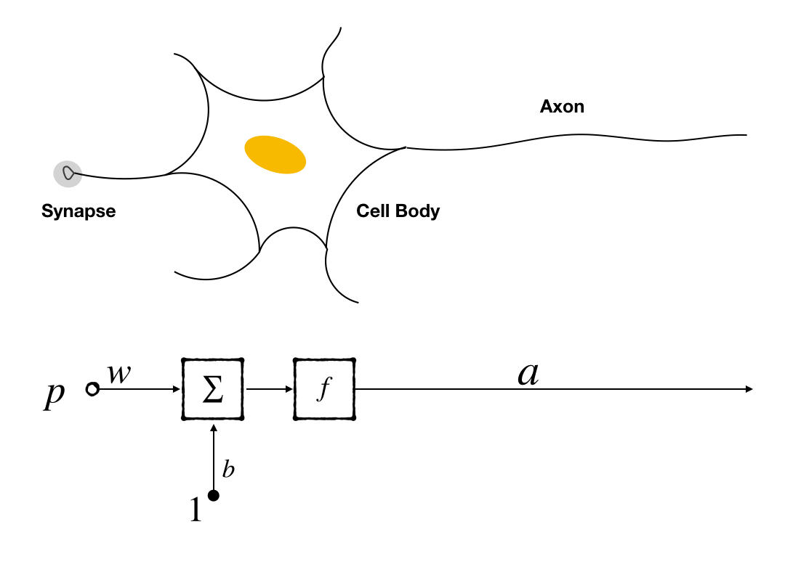
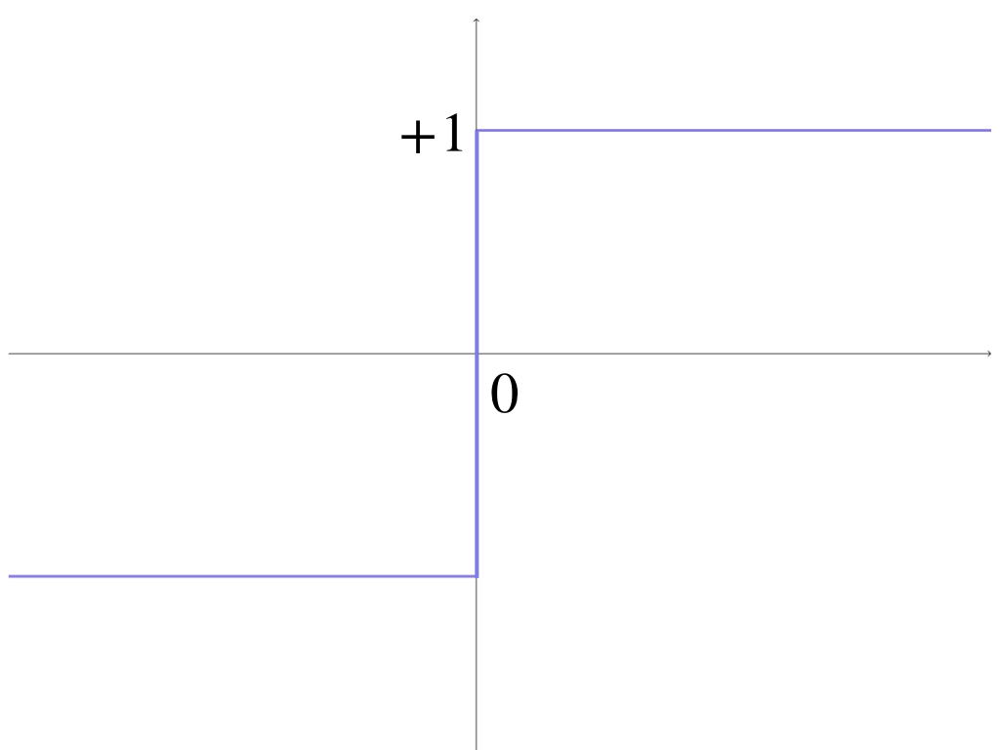
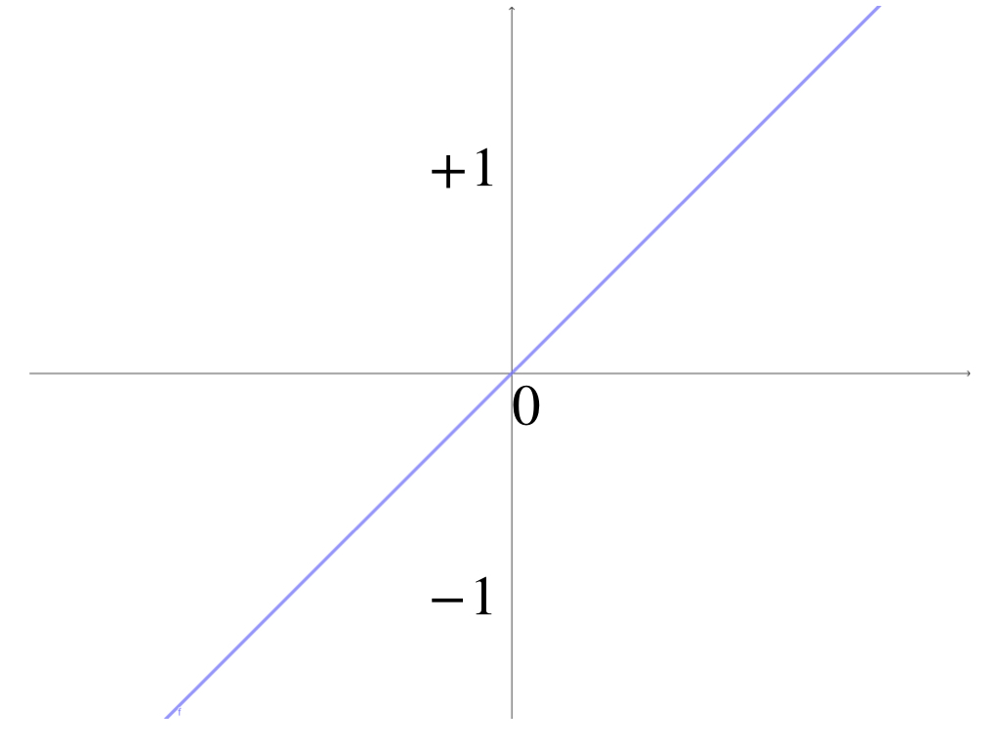
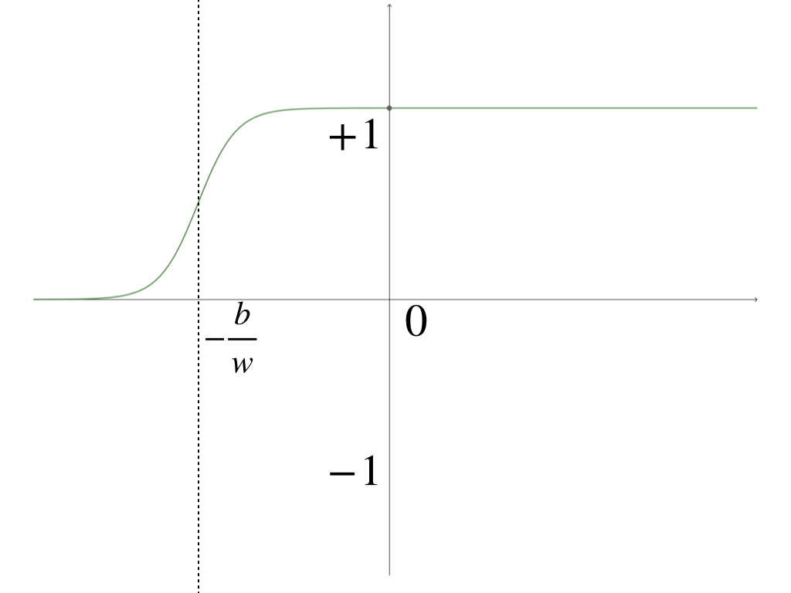
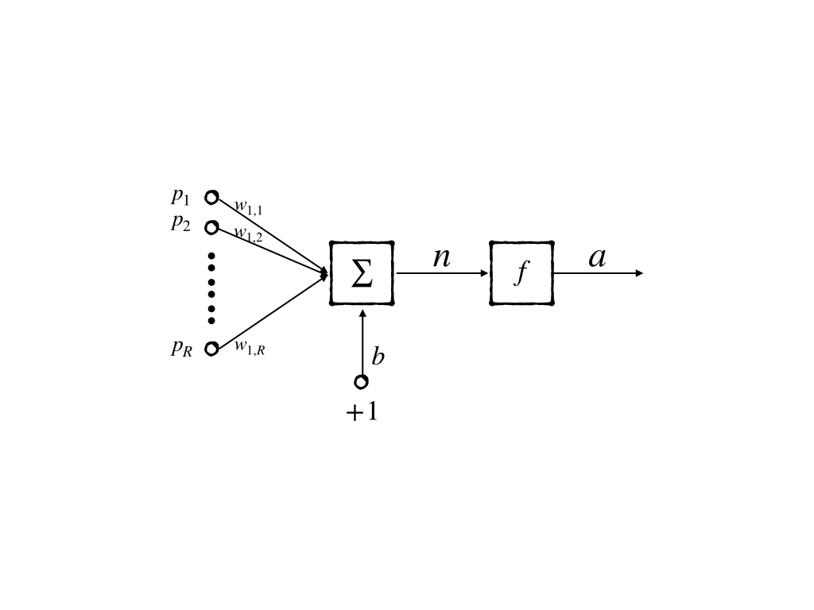
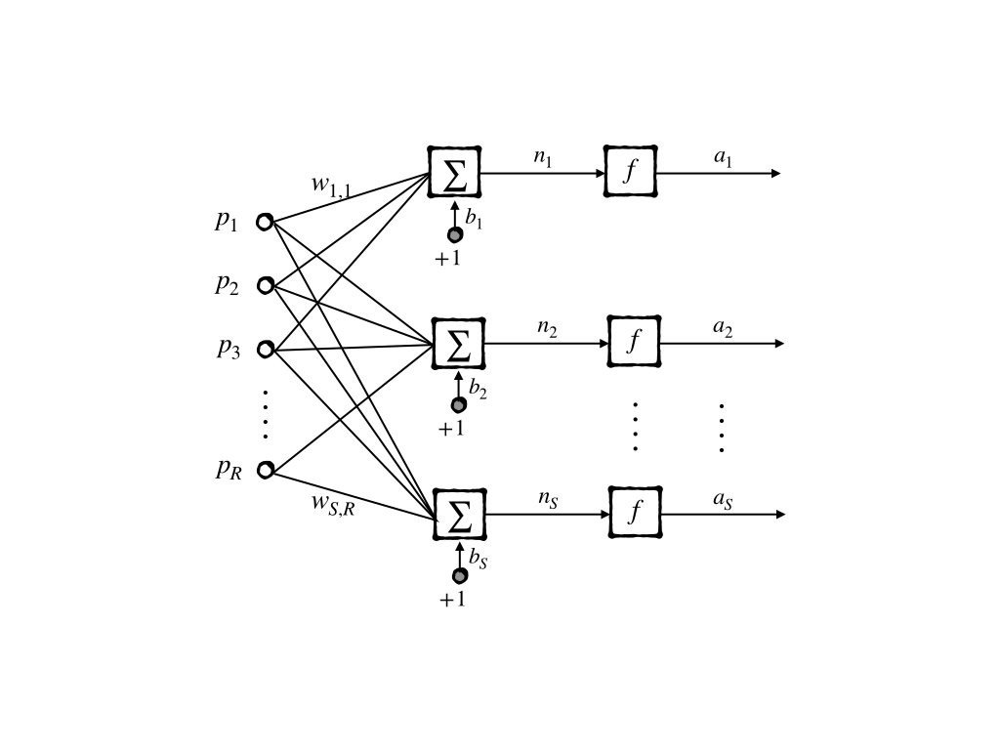
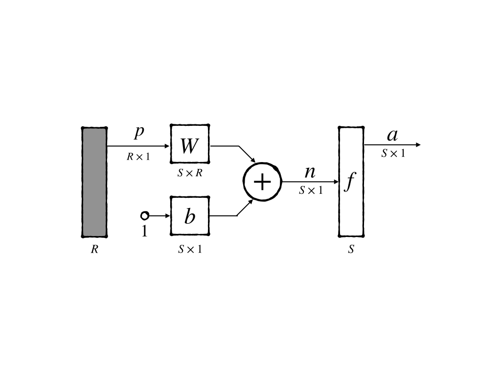
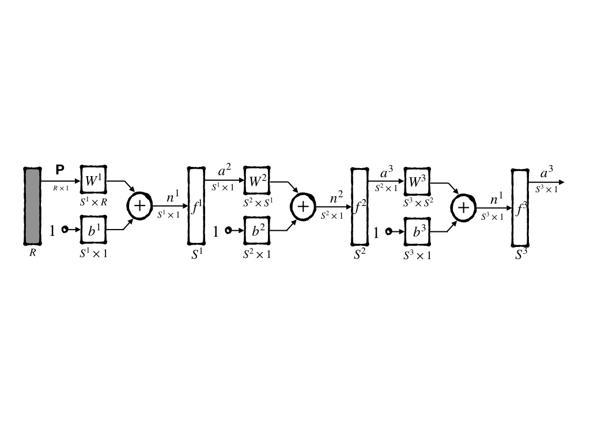
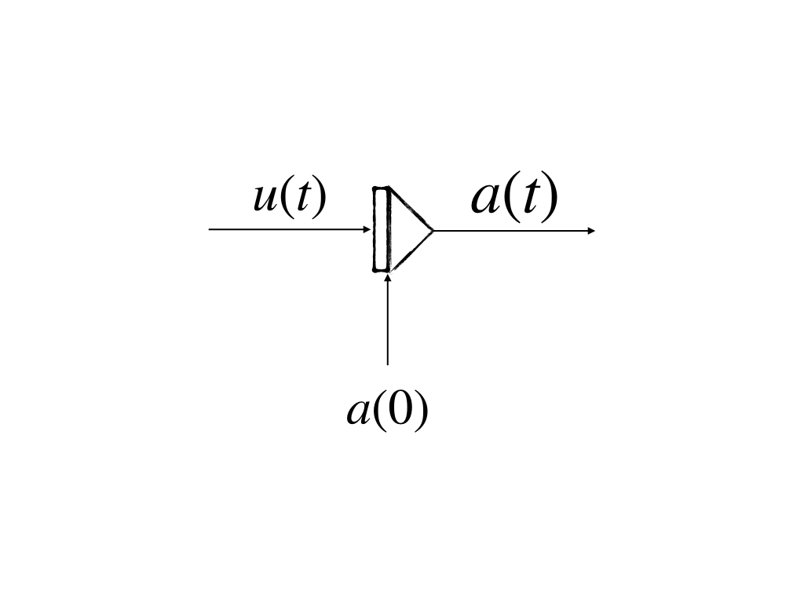

Neuron Model and Network Architecture(Part I)
Keywords: neuron model, network architecture
Theory and Notation[^1]
We are not able to build any artificial cells up to now. It seems impossible to build a neuron network through biological materials manually, either. Then to investigate the ability of neurons we have built mathematical models of the neuron. These models have been assigned different kinds of neuron-like properties. However, there must be a balance between the number of properties contained by the models and the computational abilities of the machines at that time.
From now on, we begin our study of the neuron network, and it looks like a good strategy to begin with the simplest but basic model – artificial neuron. Because a variety of network architectures are built on these simple neurons. Then well-studied operations of a neuron could be essential to help in predicting the behaviors of a more complex neuron network which is constituted of this kind of neurons.
The notation is another important issue in modeling a new concept. A unity notation is easy to share ideas while during the last decade’s different authors used their notations and this obstructed ideas. For example, when I read [McCulloch 1943] [^2], notations in the paper made me out of mind. And the following modern notation will be used throughout the whole website.
Single Neuron Model
Let begin with the simplest neuron, which has only one input, one synapse which is represented by weight, a bias, a threshold operation which is expressed by a transfer function and an output.
We know that the cell body of neurons plays summation and threshold operation. Then our simplest model is constructed as follows:

- Synapse is represented by a scalar which is called a weight, it will be multiplied by the input as a received signal, and then the signal is transferred to the cell body
- Cell body here is represented by two functions and a scalar property:
- the first one is summation which is used to collect all signals in a short time interval, while in this naive example only one input is concerned so it looks redundant but in the following more complex models, it is an essential operation of a neuron;
- the second function is a threshold operation which acts as a gatekeeper, only the signal stronger than some value could excite this neuron. Only excited neurons could pass signals to the other neurons connected to them.
- The scalar property represents an original faint signal of the neuron. From a biological point, it makes sense because every nerve cell has its resting membrane potential(RMP).
- Axon is expressed by an output that is produced by the threshold function. It can be any form in a biological neuron, like amplitude or frequency, but here it can just be a number which is decided by the selected threshold function.
The threshold function is called an active function or transfer functions officially. And it will be listed in the next section.
Let’s review the single input neuron model and its components:

- $P$ : input signal, a scalar, coming from a previous nerve cell or external signal
- $w$ : weight, a scalar, coming from the synapse, act as strength of a synapse
- $b$ : bias, a scalar, a property of this neuron
- $f$ : transfer function, act as a gatekeeper, perform a threshold operation
- $a$ : the output of the neuron, a scalar, can be a signal to the next neuron or as a final output to the external system.
The final mathematical expression is:
$$
a=f(w\cdot P + b)\tag{1}
$$
For instance, we have input $P=2.0$, synapse weight $w=3.0$, nerve cell bias $b=-1.5$ and then we get the output:
$$
a= f(2.0\times 3.0 + (-1.5))=f(4.5)\tag{2}
$$
however, bias can be omitted, or be rewritten as a special input and weight combination:
$$
a=f(w_1\cdot P + w_0\cdot 1)\text{ where } w_1=w \text{ and }w_0=b\tag{3}
$$
$w$ and $b$ came from equation(1). In the model, $w$ and $b$ are adjustable. And the ideal procedure is:
- computing summation of all weighted inputs
- select a transfer function
- put the result of step 1 into the selected function from step 2 and get a final output of the neuron
- using the learning rule to adjusting $w$ and $b$ to adaptive the task which is our purpose.
Transfer Functions
Every part of the neuron no matter the biological one or mathematical one directly affects the function of the neuron. And this also makes the design of neurons more interesting, because we can build different kinds of neurons to simulate different kinds of operations. And this also provides sufficient materials for us to develop a more complicated network. Let’s recall the single input model above, the components are $w$, $b$, $\sum$ and $f$, however, $w$,$b$ is objective of learning rules, and $\sum$ is relatively stable which is hard to be replaced by any other operations. So, we move our attention to the $f$ - threshold operation. Threshold operation is like a switch when some conditions are achieved then output a state, but when the conditions are not reached, another state would be represented. A simple mathematical equation to express this function is:
$$
f(x) =
\begin{cases}
0, & \text{if $x>0$} \
1, & \text{else}
\end{cases}\tag{4}
$$
Transfer functions can be linear or nonlinear; These three functions are mostly used.
Hard Limit Transfer Function
The first commenly used threshold function is the most intuitive one, a peicewise function, when $x>0$ the output is ‘on’ or ‘off’ for others. And by convention, ‘on’ is replace by $1$ and ‘off’ is replaced by $-1$. So it becomes:
$$
f(x) =
\begin{cases}
1, & \text{if $x>0$} \
-1, & \text{else}
\end{cases}\tag{5}
$$
and it looks like:

Then we take equation1 into equation(5), whose $x=w\cdot P +b$, we get:
$$
f(w\cdot P +b) =
\begin{cases}
1, & \text{if $w\cdot P +b>0$} \
-1, & \text{else}
\end{cases}\tag{6}
$$
We alway regard the input as independent variable so we replace $P$ with $x$ without loss of generality. Then we get:
$$
g(x) =
\begin{cases}
1, & \text{if $x> -\frac{b}{w}$} \
-1, & \text{else}
\end{cases}\tag{7}
$$
where $w\neq 0$. $g(x)$ is a special case for equation(5) as the transfer function of this single-input neuron.

This is the famous threshold operation function, the Hard Limit Transfer Function
Linear Transfer Function
Another mostly used function is the linear function, who has the simplest form:
$$
f(x)=x\tag{8}
$$
and it is a line going through the origin

When tale equation(1) into equation(8) we get:
$$
f(w\cdot P+b)=w\cdot P+b\tag{9}
$$
and we can get the special case of the linear transfer function for the single-input neuron:
$$
g(x)=w\cdot x+b\tag{10}
$$

Linear transfer function just seems as there is no transfer function in the model but in some networks, it plays an important part.
Log-sigmoid Transfer Function
Another useful transfer function is log-sigmoid funtion:
$$
f(x)=\frac{1}{1+e^{-x}}\tag{11}
$$

This sigmoid function has a similar appearance with ‘Hard Limit Transfer Function’ however, sigmoid has a more mathematical advantage than hard limit transfer function, like it has derivative everywhere while equation(5) does not have.
The single-input neuron model’s special case of the log-sigmoid function is:
$$
g(x)=\frac{1}{1+e^{-w\cdot x+b}}\tag{12}
$$
and it looks like:

These three transfer functions are the most common ones and also the easiest ones. More transfer functions can be found:‘Transfer Function’
Multiple-inputs Neuron
After the insight of single-input neuron, we can easily build a more complex and powerful neuron model – multiple-inputs neuron, whose structure is more like the biological nerve cell than the single-input neuron:

then, we can describe the nuron by mathematical expression in which summation operation will play a part in the whole process as follow:
$$
a=w_{1,1}\cdot p_1+w_{1,2}\cdot p_2+\dots+ w_{1,R}\cdot p_R+b\tag{13}
$$
There are two numbers of subscript of $w$ which seem unnecessary in the equation because the first number does not vary any more. But as a long concern, it is better to remain this number for it is used to label the neuron. So $w_{1,2}$ represents the second synapse’s weight belonging to the first neuron. When we have $k$ neurons the $m$th synapse weight of $n$th neuron is $w_{n,m}$.
Let’s go back to the equation(13). It can be rewritten as:
$$
n=W\boldsymbol{p}+b\tag{14}
$$
where:
- $W$ is a matrix who has only one row containing the weights
- $\boldsymbol{p}$ is a vector representing inputs
- $b$ is a scalar representing bias
- $n$ is the result of the cell body operation,
then the output is:
$$
a=f(W\boldsymbol{p}+b)\tag{15}
$$
The diagram is a very powerful tool to express a neuron or a network because it’s good at showing the topological structure of the network. And for further research, an abbreviated notation was designed. To the multiple-inputs neuron, we have:

a feature of this kind of notation is that dimensions of each variable are labeled and the input dimension $R$ is decided by designer.
Network Architecture
A single neuron is not sufficient, even though it has multiple inputs.
A layer of neurons
To perform a more complicated function, we need more than one neurons and construct a network which contains a layer of neurons:

in this model, we have $R$-dimensions input and $S$ neurons then we get:
$$
a_i=f(\sum_{j=1}^{R}w_{i,j}\cdot p_{j}+b_j)\tag{16}
$$
this is the output of $j$th neuron in the whole network, and we can rewrite the whole network in a matrical form:
$$
\boldsymbol{a}=\boldsymbol{f}(W\boldsymbol{p}+\boldsymbol{b})\tag{17}
$$
where
- $W$ is a matrix $\begin{bmatrix}w_{1,1}&\cdots&w_{1,R}\ \vdots&&\vdots\w_{S,1}&\cdots&w_{S_R}\end{bmatrix}$, where $w_{i,j}$ is the $j$th weight of the $i$th neuron
- $\boldsymbol{p}$ is the vector of input $\begin{bmatrix}p_1\ \vdots\p_R\end{bmatrix}$
- $\boldsymbol{a}$ is the vector of output $\begin{bmatrix}a_1\ \vdots\a_S\end{bmatrix}$
- $\boldsymbol{f}$ is the vector of transfer functions $\begin{bmatrix}f_1\ \vdots\f_S\end{bmatrix}$ where each $f_i$ can be different.
This network is much more powerful than the single neuron but they have a very similar abbreviated notation:

the only distinction is the dimension of each variable.
Multiple Layers of Neurons
The next stage to extend a single-layer network is multiple layers:

and, its final output is:
$$
\boldsymbol{a}=\boldsymbol{f}^3(W^3\boldsymbol{f}^2(W^2\boldsymbol{f}^1(W^1\boldsymbol{p}+\boldsymbol{b}^1)+\boldsymbol{b}^2)+\boldsymbol{b}^3)\tag{18}
$$
the numbers of the right-top of the variable are the layer number, for example, $w^1_{2,3}$ is the weight of $2$nd synapse of the $3$rd neuron at the 1st layer.
Each layer has also its name, for instance, the first layer whose input is external input is called the input layer. The layer whose output is external output is called the output layer. Other layers are called hidden layers. Its abbreviated notation is:

The new model with multiple layers is powerful but it is hard to design because the layer number is arbitrary and neurons number in a layer is also arbitrary. So it becomes an experimental work. However, the input layer and output layer have a constant number and they are decided by the specialized task. Transfer functions are also arbitrary, and each neuron can have its transfer function which can be different from any neuron in the network. Bias can be omitted but this can cause a problem that it will always output $\boldsymbol{0}$ when the input is $\boldsymbol{0}$. This phenomenon could not make sense in some tasks, so bias plays an important part in the $\boldsymbol{0}$ input situation. But to some other input, bias seems not so important.
Recurrent Networks
It seems possible that a neuron’s output also connects to its input. This means that the input coming some times ago will go back to the neuron again. It acts somehow like
$$
\boldsymbol{a}=\boldsymbol{f}(W\boldsymbol{f}(W\boldsymbol{p}+\boldsymbol{b})+\boldsymbol{b})\tag{19}
$$
to illustrate the procedure, we present the delay block

where the output is the input delayed 1 time unit:
$$
a(t)=u(t-1)\tag{20}
$$
and the block is initialized by $a(0)$
Another useful operation for the recurrent network is integrator:

whose output is:
$$
a(t)=\int^t_0u(t)dt +a(0)\tag{21}
$$
A recurrent network is a network in which there is a feedback connection that a neuron’s output connects to its input through some path. This is more difficult than the network discussed above. Here we just list some basic concepts and more details would be researched in the following posts. The recurrent network works more powerful than a feedforward network because it exhibits temporal behavior which is a fundamental property of the biological brain. A typical recurrent network is:

where:
$$
a(0)=\boldsymbol{p}\
a(t+1)=f(W\boldsymbol{p}+\boldsymbol{b})\tag{22}
$$
Conclusion
- Basic neuron network models are important as the element of a more complex model.
- How to build a neuron network from step to step is the essential fundament for future study
- The transfer function is the key feature of a neuron and it can decide the performance of a neuron even a neuron network
- Connection restore the information of the neuron network
- Biological neuron networks could give us more ideas in the following research.
References
[^1]: Demuth, H.B., Beale, M.H., De Jess, O. and Hagan, M.T., 2014. Neural network design. Martin Hagan.
[^2]: McCulloch, Warren S., and Walter Pitts. “A logical calculus of the ideas immanent in nervous activity.” The bulletin of mathematical biophysics 5, no. 4 (1943): 115-133.